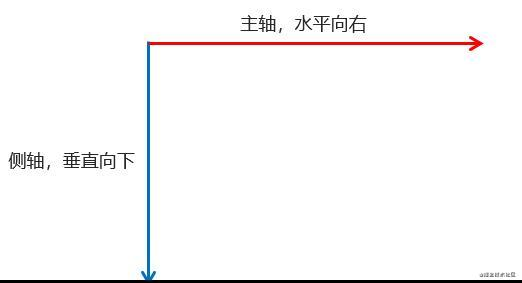
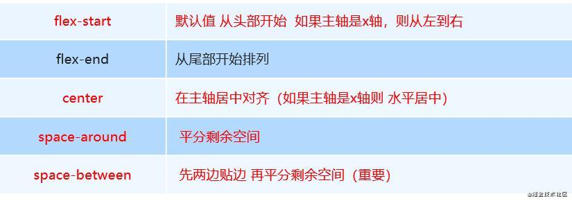
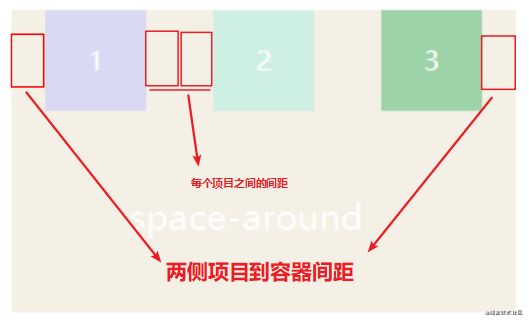
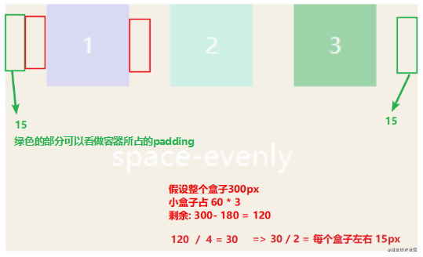
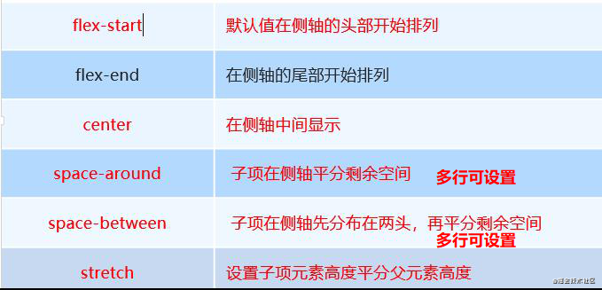
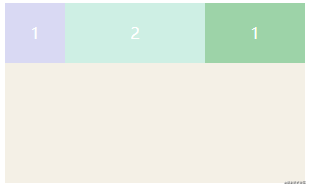
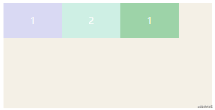
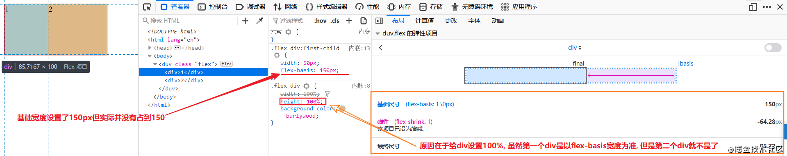

flex
父项常用属性
- flex-direction：设置主轴的方向
- justify-content：设置主轴上的子元素排列方式
- flex-wrap：设置子元素是否换行
- align-content：设置侧轴上的子元素的排列方式（多行）
- align-items：设置侧轴上的子元素排列方式（单行）
- flex-flow：复合属性，相当于同时设置了 flex-direction 和 flex-wrap
flex-direction
在 flex 布局中，是分为主轴和侧轴两个方向，同样的叫法有 ： 行和列、x 轴和y 轴
- 默认主轴方向就是 x 轴方向，水平向右
- 默认侧轴方向就是 y 轴方向，水平向下

主轴和侧轴是会变化的，就看 flex-direction 设置谁为主轴，剩下的就是侧轴。而我们的子元素是跟着主轴来排列的
flex-wrap设置是否换行
默认情况下，项目都排在一条线（又称”轴线”）上。flex-wrap属性定义，flex布局中默认是不换行的。
- nowrap 不换行
- wrap 换行
justify-content 设置主轴上的子元素排列方式
- 默认主轴方向就是 x 轴方向，水平向右
- 默认侧轴方向就是 y 轴方向，水平向下
主轴和侧轴是会变化的，就看 flex-direction 设置谁为主轴，剩下的就是侧轴。而我们的子元素是跟着主轴来排列的
flex-wrap设置是否换行
默认情况下，项目都排在一条线（又称”轴线”）上。flex-wrap属性定义，flex布局中默认是不换行的。
- nowrap 不换行
- wrap 换行
justify-content 设置主轴上的子元素排列方式

这里讲下space-around和space-evenly
- 这里讲下space-around和space-evenly

- space-evenly：项目两侧之间的间距与项目与容器两侧的间距相等，相当于除去项目宽度和容器和项目的两侧间距，剩下的平均分配了剩余宽度作为项目左右margin。

设置侧轴上的子元素排列方式：align-items(单行)/align-content(多行)

上图写能设置多行只能用于子项出现 换行 的情况（多行），在单行下是没有效果的。
效果跟上面是一样的只不过是方向换了，上面是元素在主轴上排列，这个是在侧抽上，至于侧轴是不是Y轴就看你的flex-direciton怎么设置的了
子项常见属性
- flex(复合属性): 默认: flex: 0 1 auto;
- flex-grow
- flex-shrink
- flex-basis
- align-self：控制子项自己在侧轴的排列方式
- order：定义子项的排列顺序(前后顺序), 0是第一个
flex-grow
默认0，用于决定项目在有剩余空间的情况下是否放大，默认不放大；注意，即便设置了固定宽度，也会放大。

假设第一个项目默认为0，第二个项目为flex-grow:2，最后一个项目为1，则第二个项目在放大时所占空间是最后项目的两倍。
可以这么理解:
- flex: 1 => 在剩余的空间里我就占一份
- flex: 2 => 在剩余的空间里我就占两份
- flex: 3 => 在剩余的空间里我就占三份
假设三个盒子分别都设置了上面的属性: 那就将剩余空间分成6份, 各占自己的份数 假设前两个没有设置, 就最后一个设置了flex: 3 === flex: 1, 那就将剩余空间都给它
flex-shrink
默认1，用于决定项目在空间不足时是否缩小，默认项目都是1，即空间不足时大家一起等比缩小；注意，即便设置了固定宽度，也会缩小。但如果某个项目flex-shrink设置为0，则即便空间不够，自身也不缩小。

上图中第二个项目flex-shrink为0，所以自身不会缩小。
flex-basis
默认auto，用于设置项目宽度，默认auto时，项目会保持默认宽度，或者以width为自身的宽度，但如果设置了flex-basis，权重会width属性高，因此会覆盖widtn属性。
上图中先设置了flex-basis属性，后设置了width属性，但宽度依旧以flex-basis属性为准。
注意⚠: 如果当容器中有多个盒子并且还宽度100%, flex-basis会被影响, 如下图

解决办法就是在我们设置flex-basis宽度时, 最好给他设置flex-shrink为0不缩放